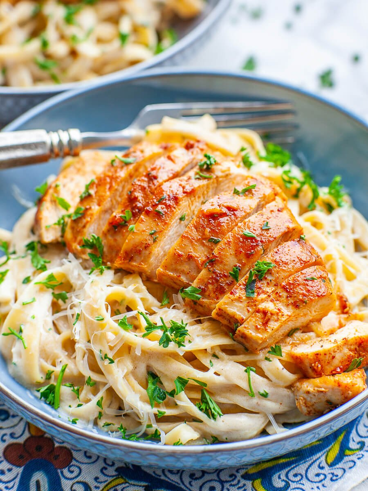

A fan favorite from Italy, enjoyed by many across the world
A simple, yet extremely satisfying dish with much room for experimentation.
Ingredients
- Pasta noodles
- Black pepper, and Salt
- Onions
- Scallions
- Choice of Vegetables
- Meatballs or Chicken
- Alfredo Sauce
- Olive Oil
Recipe Instructions
- Bring water to a boil and place the noodles in the water
- Turn the heat level to medium and let the noodles cook for 7-8 minutes
- After the time has elapsed, turn off the heat and drain the noodles
- Add about a tablespoon of olive oil, then black pepper
- Make sure to spread the oil and pepper out, then add alfredo sauce
- Add your meat and/or vegetables to to the bowl
- Enjoy your well deserved meal :)
Return to top
Return to Main